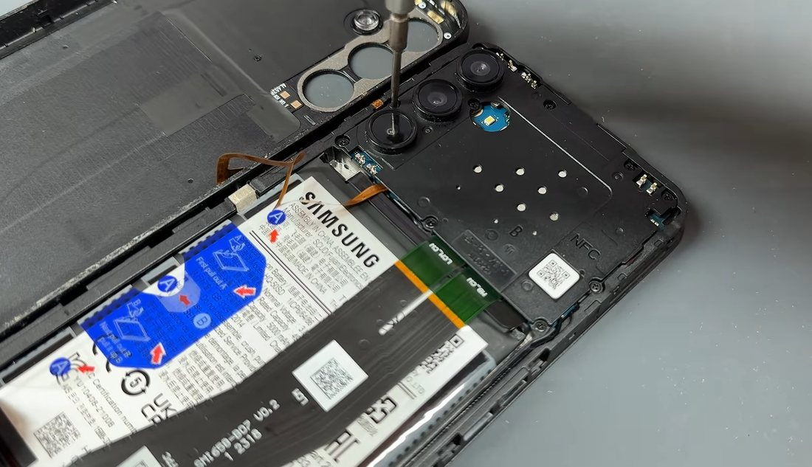
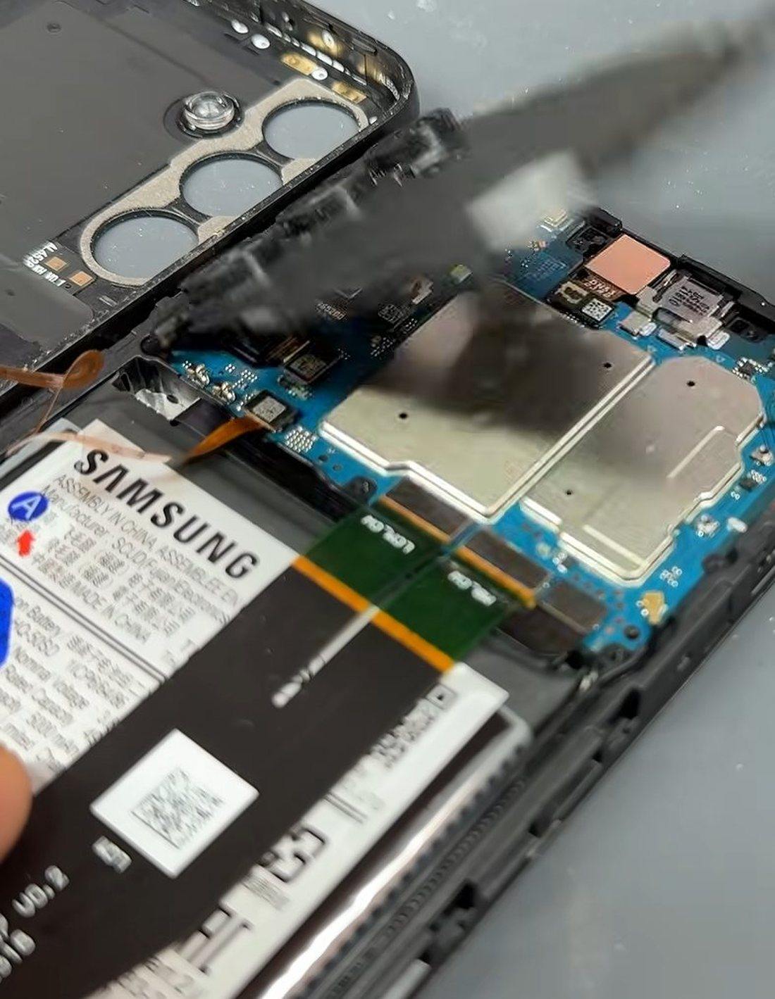
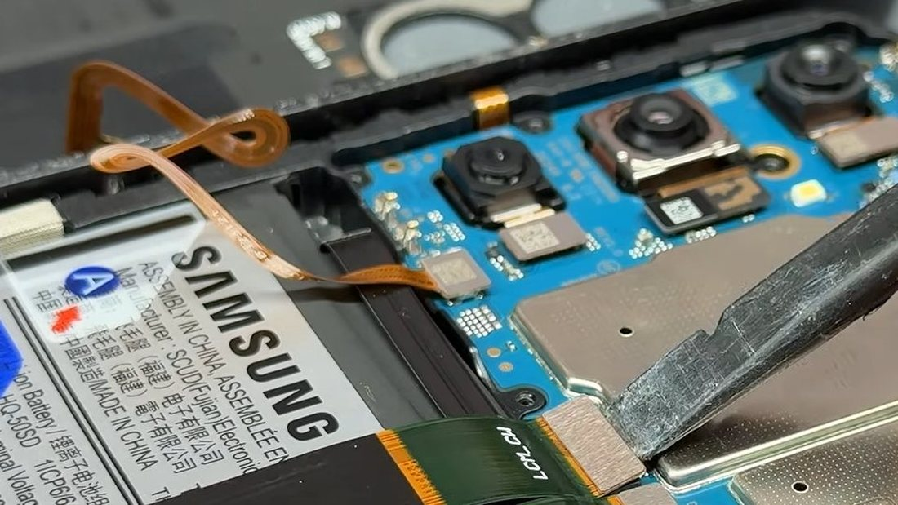
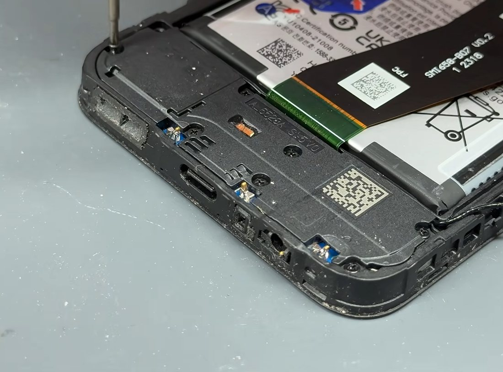
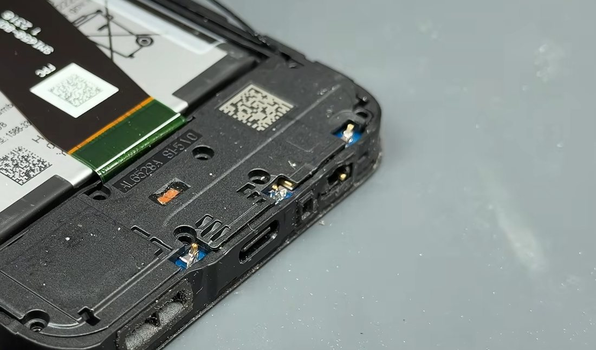
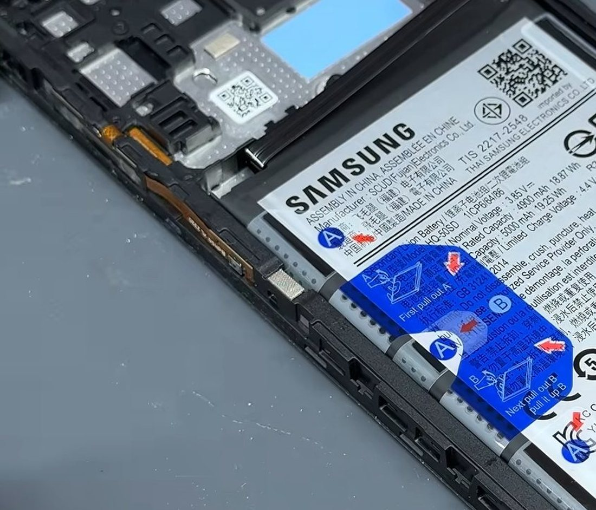
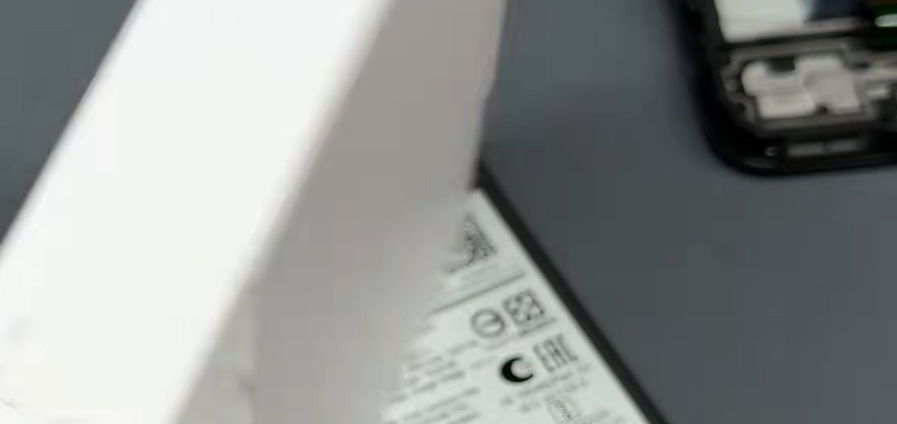
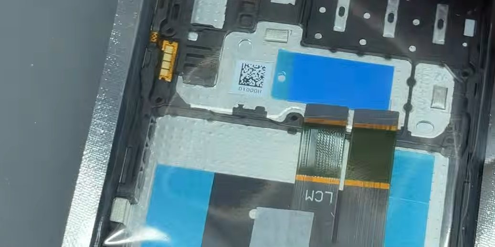
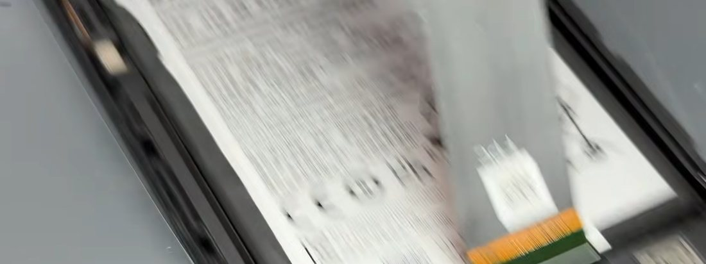

一段 10 分钟的维修视频，把三星 A14 换前屏从取卡托、撬后盖到开机验证走了一遍。下面按字幕拆成 5 步，重点说清 10 颗与 8 颗螺丝、排线顺序，以及 4G 和 5G 屏幕不通用这件事。

适合谁：手边有塑料撬棒、小螺丝刀和镊子，愿意按视频顺序拆装的人；视频里这三样工具都实际出现过00:00:2600:01:1700:02:12。
不适合谁：还没确认手机是 4G 还是 5G 就下单的人。视频展示的是 A14 4G 版本，并说 5G 版本用的是另一块屏幕00:04:48。
视频里没说：屏幕价格、整单维修报价、总耗时，以及具体工具品牌型号。字幕只出现了工具类别，没有给出购买参数。
先关机，再用 SIM 卡弹出工具取出 SIM 卡托；视频里作者用的是镊子00:00:1100:00:14。
别把卡托取出当成多余动作。视频说取出卡托后，机身上会形成一个薄弱点，后面撬后盖就从这里开始00:00:22。
准备三样：塑料撬棒、小螺丝刀、镊子。撬棒用来开封，螺丝刀用来拧十字螺丝，镊子负责挑排线和取小零件00:00:2600:01:1700:02:12。
| 要决定的事 | 视频里的说法 | 照着做 |
|---|---|---|
| 买 4G 还是 5G 屏 | 视频展示的是 A14 4G 版本，5G 版本用的是另一块屏幕00:04:48；画面里还报出 SM A14 5 的部件标识00:04:57 | 下单前先核对自己的版本，别只看“A14”三个字 |
| 同轴电缆要不要先拔 | 作者特意保留同轴电缆连接，说这样装新屏时更容易00:02:38 | 拆主板时先留着，到拆屏幕子板时再松开00:03:46 |
| 螺丝刀选磁性还是普通 | 用磁性螺丝刀时，有些螺丝无法完全拔出，还得用镊子取00:01:38 | 不管用哪种，都把镊子放在手边 |
| 螺丝放哪里 | 视频直接把拆下的螺丝放在后盖里暂存00:02:05 | 按拆卸位置分区放，装回时不会混 |
| 新屏塑料膜撕不撕 | 可以随时取下；作者通常保留，避免交给客户前留下指纹00:09:41 | 交付前再决定，别在装的过程中反复摸屏幕 |
把塑料撬棒插进屏幕边缘、塑料机身和塑料盖之间，开始撬后盖00:00:29。边角处会有点紧，视频说别怕用点力00:00:43。
经过按键位置时放慢：下面有一条排线，只需轻轻插入撬棒，不要深插00:00:4900:00:51。
最后绕过顶部角落，后盖就能松开。遇到前面说的那条排线，从左侧把它打开，别硬扯00:00:5900:01:05。
打开后盖后，先拧下 10 颗十字螺丝，用小平头螺丝刀操作00:01:14。磁性螺丝刀吸住的螺丝拔不出来时，用镊子取下00:01:40。

用镊子从顶角把塑料挡板撬起来，露出逻辑板00:02:14。接着用塑料镊子断开电池两根排线，以及左侧锁定按钮的排线00:02:2400:02:30。

这时可以把主板从机箱里取出，但作者保留了同轴电缆的连接，说这样后面装新屏更省事00:02:3600:02:43。
转到底部，这里有 8 颗十字螺丝，固定着扬声器和后盖板00:02:50。螺丝收好，后面装回还要用00:03:04。
用镊子轻轻插入盖板边缘向上撬。视频里作者发现自己漏拆了一颗螺丝，但盖板最后还是能抬起来00:03:2200:03:27。

松开盖板后，断开屏幕背面的柔性电缆，再松开同轴电缆，撬起子板下方让它脱开00:03:4300:03:51。

这块电池用的是卡扣固定：先移除卡扣，再向上提起卡扣、拉出电池00:04:1200:04:28。视频说这是他第一次在三星手机上见到这种设计00:04:02。

电池取出后再看新屏。字幕明确说这支片子用的是 A14 4G 屏幕，5G 版本用的是另一个部件00:04:48。

新屏不附带扬声器和振动马达，要把它们移到机箱上00:05:08。马达用镊子伸到下面就能取出；扬声器底部有小凹槽，从凹槽处向上撬00:05:1400:05:18。
装回时确认凸出的针脚朝下，方向和取出时一致00:05:32。最后撕掉电池的粘合剂，把末端固定好00:05:52。
从下面的门板开始装回。线缆要放进对应的小凹槽，用塑料撬棒按进去，确保完全贴合00:06:0600:06:18。

重连排线后，装回扬声器和塑料盖，拧上 8 颗十字螺丝00:06:2800:06:40。
主板要平放，别压到螺丝孔。依次接回屏幕子板的两条排线、电源按钮的小排线，最后接电池连接器00:07:2800:07:3700:07:45。
摄像头塑料盖用 10 颗十字螺丝固定00:07:58。如果卡扣凸出来没贴合，用镊子尾部轻轻按压00:09:05。

后盖折叠装回时，先确认按钮到位，再沿边缘施压00:09:1400:09:24。开机看到三星标志后，再把 SIM 卡托插回去00:09:5000:09:58。
| 坑 | 怎么避 |
|---|---|
| 买错屏幕版本 | 视频只演示 A14 4G 屏；5G 版本用的是另一个部件，下单前先核对00:04:48 |
| 撬后盖时扯断按键排线 | 按键下方有排线，撬棒只轻轻插入00:00:49 |
| 螺丝混装 | 上部 10 颗、底部 8 颗分开存放；可用后盖当临时托盘00:02:05 |
| 主板压到螺丝孔 | 放回主板时保持平放，确认位置再拧螺丝00:07:31 |
| 扬声器针脚方向装反 | 让凸出的针脚朝下，与取出时同向00:05:32 |
| 摄像头盖卡扣凸出 | 拧紧后若没贴合，用镊子尾部轻按到位00:09:05 |
| 盖后盖时按钮卡住 | 先让按钮到位，再沿边缘逐段施压00:09:21 |